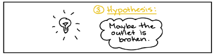

Module 1 : SCIENCE AND SOCIETY


THE NATURE OF SCIENCE
OBJECTIVES:
- Demonstrate the following scientific processes: observing, communicating, comparing, organizing, relating, inferring, predicting, analyzing and applying.
- Demonstrate how science is an ongoing process of gathering and evaluating information.
What is Science?
Science is the study of everything around us.
The Scientific Method/Process
The Scientific method has five basic steps.
- Observation
- Question
- Hypothesis
- Experiment
- Applying results
What is a Question?
A question is what Scientists ask when they notice something.
What is a Hypothesis?
A Hypothesis is a possible explanation
Scientific method example: Failure to toast
Make an observation.
Observation: the toaster won't toast.
Ask a question.
Question: Why won't my toaster toast?
Propose a hypothesis.
Hypothesis: Maybe the outlet is broken.
Make predictions.
Prediction: If I plug the toaster into a different outlet,
then it will toast the bread.
Test the predictions.
Test of prediction: Plug the toaster into a different outlet and try again.
- If the toaster does toast, then the hypothesis is supported—likely correct.
- If the toaster doesn't toast, then the hypothesis is not supported—likely wrong.